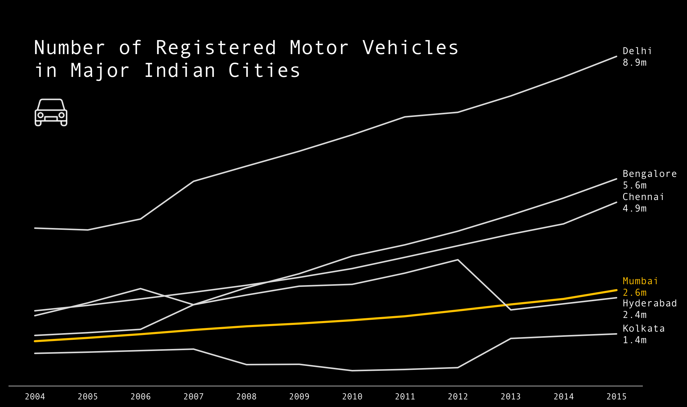

Introduction
City traffic in Mumbai. Photograph: Auscape/UIG via Getty Images.
Mumbai has experienced a surge in motor vehicle traffic and road congestion. Prevailing explanations for
the worsening traffic jams typically point to the recent explosion in private automobile ownership. The number of cars on Mumbai's roads
has increased by 50% over the past five years, from approximately two million vehicles in 2011 to three million vehicles in 2016 1
. This rapid increase in
automobiles is often explained as the result of population growth, rising discretionary incomes, and suburbanization.
It is true that the number of motor vehicles on Mumbai's roads has been increasing rapidly. However, walking and mass transit are still the primary modes of transportation for most Mumbai residents by a large margin, with the vast majority of trips in the city being made on foot, bus or train.
But Mumbai continues to prioritize the car: Since 1999, in an attempt to ease congestion, Mumbai has built over 60 flyovers
2
and several high-speed freeways, including the Bandra-Worli Sea Link,
Eastern Freeway, Jogeshwari-Vikhroli Link Road (JVLR) and the Santacruz-Chembur Link Road (SCLR).
Meanwhile, the city has no dedicated bus lanes, no regulations against roadside parking on arterial roads or in business districts,
and lacks basic provisions for pedestrians like footpaths and speed limits.
Transit Oriented Mumbai
While Mumbai may have a reputation as a car-centric city, few Mumbaikars use cars for their daily commutes. Manish Shirgaokar, Assistant Professor of Urban and Regional Planning at the University of Alberta, analyzes commuting patterns of middle class workers in Mumbai. He finds that over half of middle class workers commuting to Mumbai city ride the suburban rail network, followed by walking, biking and the bus. For workers whose jobs are located in Mumbai's exurbs, walking and biking are the most common modes, followed by the train, motorcycle and bus. Only 3% of middle class workers commute by car
3
. Below is a visualization summarizing Shirgaokar's findings.
Transport mode split for middle class workers in Mumbai. Data Source: Manish Shirgaokar
Indeed, Mumbai is a transit- and pedestrian-oriented city with an extensive, albeit intense and overcrowded, public transport system.
3
. Visualization: Will Geary.Buses
Originally established in 1873 as a tramway company, The Brihanmumbai Electricity Supply and Transport (BEST) Undertaking is the civic transport and electricity provider in Mumbai. As of 2015, BEST runs approximately 3,600 buses, transporting 4.8 million passengers daily over 365 routes.

Double-decker bus in heavy traffic in Bandra East, Mumbai. Photo: Brett Cole.
Trains
The Mumbai Suburban Railway connects Mumbai metropolitan region and its suburbs. Spread over 465 kilometres, the suburban railway carries more than 7.5 million commuters daily. By annual ridership (2.64 billion), the Mumbai Suburban Railway is one of the busiest commuter rail systems in the world and experiences severe overcrowding.
Local train arrives at station during rush hour in Mumbai. Photo: Getty Images.
Metro
There is also a developing subway system, called the Mumbai Metro, most of which is currently in planning or construction phases. Line 1 of the Mumbai metro consists of 12 stations connecting the Eastern and Western suburbs of Mumbai. It began operations in June 2014 and already has the eigth highest passenger density of any metro line in the world. Seven additional metro lines have been approved and are currently under construction.
Line 1 of the Mumbai Metro. Photo: SYSTRA Engineering.
Mumbai Transit Flows
Transit schedule data for the BEST Bus system is publicly available in GTFS format via GTFS Data Exchange
4
,
valid through July 2015. Schedule data for the Mumbai Metro is also publicly available via GTFS Data Exchange 5
,
valid through December 2015.
Schedule data for the Mumbai Suburban Railway was not previously available in machine-readable format. However, timetables for the Railway
are available from Transport For Mumbai 6
in PDF format. These timetables were scraped with a custom Python script
and converted into machine-readable format.
Example timetables for Mumbai's Suburban Railway that were scraped and digitized. Source: Transport for Mumbai
I created the below animation Mumbai Transit Flows using the publicly available GTFS data for the BEST Bus and Mumbai Metro systems,
as well as the data that I scraped from Mumbai Suburban Railway timetables. I wrote a Python script to parse the data and used Processing to visualize it.
Mumbai Transit Flows does not include informal modes such as walking, biking, rickshaws, or private automobiles.
It also does not reflect any deviations from schedule. Thus, it is far from an accurate or wholistic representation of transportation
in Mumbai and does not claim to be.
My intention behind creating it is to provide an intuitive sense of the scale and intensity of formalized public transit
in the Greater Mumbai Area.
6
.Mumbai Transit Flows
7
. Will Geary.Comparative Urbanism
In this section, we will compare statistics on motor vehicles, population and street network density between Mumbai and five of the other most populous Indian cities: Delhi, Kolkata, Bengaluru, Chennai and Hyderabad. The goal of this analysis is to provide statistical context around Mumbai's congestion problems. Data was obtained from the Indian Government's Open Data Portal and OpenStreetMap.
Mumbai and five of India's other most populous cities: Delhi, Bengaluru, Hyderabad, Chennai and Kolkata.
Population
Home to 18.4 million people, Mumbai is the second-largest city in India behind Delhi.
Population for select Indian metro areas as of 2016.
Motor Vehicles
Despite its large population, Mumbai actually has far fewer registered motor vehicles than Delhi, Bengaluru and Chennai. This data was obtained from the Indian Government's Open Data Portal
8
.

Number of Registered Motor Vehicles in Major Indian Cities, 2004-2015. Data Source: Open Government Data Platform India.
Motor Vehicles per Person
Mumbai has fewer motor vehicles per capita than any of the other five largest Indian cities.
Number of Registered Motor Vehicles per 2016 population in major Indian Cities, 2004-2015. Data Source: Open Government Data Platform India.
Road Networks
If Mumbai has fewer cars per capita than other Indian mega-cities, than why is it struggling with such bad traffic jams?
The answer: Road density. Mumbai has only about 2,000 kilometers of roads, less then 10% of Delhi's 28,508 kilometers of roads.
Road networks were exported from OpenStreetMap
9
.
The maps below display the road networks in Mumbai, Delhi, Bengaluru, Hyderabad, Chennai and Kolkata.
Approximate total street length per city in kilometers. Data Source: OpenStreetMap.
Total Road Length
Mumbai has significantly less total road length than Delhi, Bengaluru and Hyderabad.
Approximate total road length per city in kilometers. Data Sources: The Times of India, OpenStreetMap.
Motor Vehicles per Kilometer of Road
Mumbai has the second highest motor vehicle density of its peer cities, calculated as the number of registered motor vehicles per kilometer of road.
Number of registered motor vehicles per kilometer of road. Data Sources: Open Government Data Platform India, OpenStreetMap.
Flyover City
Mumbai's government wants more roads but doesn't have room to build them. So, it has opted to 1) build roads on top of roads and 2) displace residents from their homes to make way for new roads.Mumbai built an estimated 55-60 flyovers since the late 1990s in an attempt to ease congestion. The term flyover refers to bridges, roads, railways or other structures that crosses over another road or railway. Recent examples of these include Santacruz Chembur Link Road, Bendra Worli Sea Link, Eastern Freeway and Eastern Express Highway, as shown below.

Selected flyovers and freeways in Mumbai. Images: Times of India, Hindustan Times, India Today.
Santacruz Chembur Link Road is a 6.5km arterial road in Mumbai that connects the Eastern Express Highway in Chembur with the Western Express Highway in Santa Cruz, close to Mumbai's international airport. Santacruz Chembur Link Road was constructed during phase one of the Mumbai Urban Transport Project (MUTP).
The Mumbai Urban Transport Project was a $555 million project initiated in 2002 by the Mumbai Metropolitan Region Development Authority (MMRDA) with funding from the World Bank. The MUTP’s stated goal is to “foster the development of an efficient and sustainable urban transport"
10
. The MUTP included
the building of the Santacruz Chembur Link Road and the widening of the Jogeshwari - Vikhroli Link Road, in addition to many
other proposals.
Unfortunately, the MUTP had disastrous effects for many of the people living in the surrounding communities who were forced to leave their homes to make way for the construction of the project
11
.
According to the World Bank's own post-mortem assessment, over 100,000 people living along the proposed roads and railways tracks were resettled
12
. This displacement was justified by the fact that
most people affected did not have legal title to the land they occupied.
The below report from the World Bank documents the forced resettlement caused by the MUTP and even casts it in a positive light, calling the project "a worldwide example of urban resettlement on a mega scale" and surmising that the "lessons learnt from the project have equipped the MMRDA to effectively deal with the resettlement challenges of future infrastructure projects in the city".
The displacement caused by the MUTP is unfortunately only one of many historical and planned instances of forced resettlement caused by road-building projects.
There is an existing plan to extend the Eastern Freeway by connecting it to the Eastern Express Highway. The extension would go through slum pockets on the east side of the Eastern Express Highway. According to MMRDA's Metropolitan Commissioner Urvinder Pal Singh Madan, "Around 2,000 slums will have to be cleared to create space for the freeway [...] It should take at least a year for the project to get off the ground. During this period, we will begin the process for getting environmental and coastal regulatory authority (CRZ) clearances, as some mangroves will be affected"
13
.
Imagining Alternate Futures
Flyovers and road widening schemes are viewed as a solution to Mumbai's traffic congestion but, despite their proliferation, the problem remains unresolved. These car-centric projects aim to benefit only the few Mumbaikars who commute by car, while threatening the lives and livelihoods of city's poorest residents who live in their way. They also incentivize more people to commute by car, worsening congestion and prompting calls for more and wider roads, a cylical phenomenon often referred to as the law of induced demand.There are several strategies that Mumbai could employ to improve road congestion and safety while benefitting its millions of residents who commute by foot, bicycle, train or bus. These strategies ought to be simple, relatively inexpensive and effective without requiring any forced resettlement.
Proposed tactics include:
- Dedicated bus lanes
- Prohibit parking on major arterial roads
- Regulate parking in urban core
- Congestion pricing in business districts
- Protected sidewalks and bike lanes
- Legal provisions for pedestrians
Pedestrians cross a street in Mumbai. Image: Hindustan Times.
Please note: footnotes not visible on mobile.
Return to Student Projects